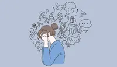

Información Útil | Psicoeducación

La ansiedad es una emoción normal que se experimenta en situaciones en las que el sujeto se siente amenazado por un peligro externo o interno. La ansiedad es anormal cuando es desproporcionada y demasiado prolongada para el estímulo desencadenante.
Entre los signos de ansiedad pueden encontrarse:
Sensación de nerviosismo, de agitación o de tensión;
Sensación de peligro inminente, pánico o catástrofe;
Aumento del ritmo cardíaco;
Respiración acelerada (hiperventilación);
Sudoración;
Etc
Ciertas experiencias de vida, como acontecimientos traumáticos, parecen provocar los trastornos de ansiedad en personas que ya son propensas. Los rasgos heredados también pueden ser un factor.